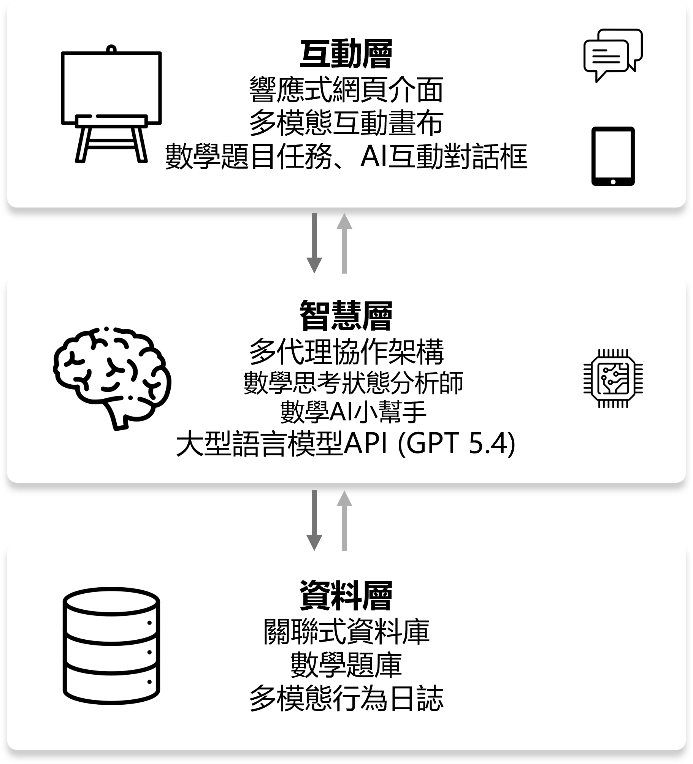

碩士論文 · 網頁應用
看見思考軌跡：AI 數學同伴
獨立完成結合互動畫布與多代理 AI 的數學問題解決系統，讓學生以手寫、繪圖和文字呈現解題歷程，並取得依解題階段調整的引導。
我的角色
獨立完成整套系統開發，涵蓋前端互動畫布、後端與資料紀錄、AI 代理協作、提示詞策略及功能整合。研究分析使用的問卷與量表，參考既有文獻及學長姊的研究工具。
期間：2026
從文字對話到可見的思考歷程
針對國小高年級的幾何文字應用題，將題目、互動畫布與 AI 對話整合在同一操作介面。學生可以自由書寫、繪製幾何圖形、列式、上傳圖片及標記重點，持續留下解題與修正的軌跡。
三層架構與代理人分工
系統分為互動層、智慧層與資料層。互動層提供響應式網頁、畫布及對話；智慧層由「數學思考狀態分析師」推估解題階段，再由「數學 AI 小幫手」整合核心與階段提示詞生成引導；資料層儲存題庫、對話、畫布事件與學習歷程。

一次互動的資料流程
學生送出訊息時，系統一併擷取畫布影像與近期互動紀錄，交由分析師推估當前解題階段。AI 小幫手依分析結果與題目脈絡生成提問或同理回應，回傳介面後更新對話與操作紀錄，供下一輪互動使用。設計目標是支持思考，而非直接提供答案。
研究觀察與系統限制
研究有效樣本為 9 名五年級學生，主要觀察到文字與畫布並行的人機互動。數學焦慮與自我效能的前後測差異均未達統計顯著，因此不宣稱已證實提升學習成效。後續改進重點包括解題階段判定的驗證、不規則筆跡理解，以及減少重複制式回應。